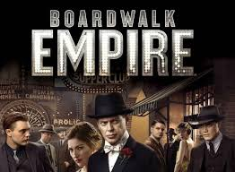
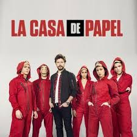
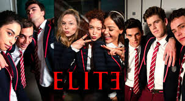
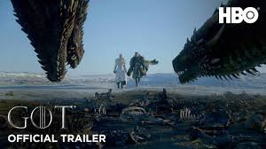
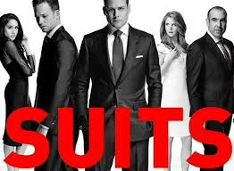

Lucifer
Daca titlul acestui serial te duce cu gandul la ingerul cazut, la biblie si la fiul "rebel" al lui Dumnezeu, ei bineee… Ai perfecta dreptate. Doar ca lucrurile sunt usor transpuse in contemporan in sensul ca: Lucifer conduce un club de noapte pe pamant si isi face meseria kind of, adica pedespseste raul si cel mai important, o ajuta pe Chloe in rezorvarea diferitelor cazuri de crima. Actiunea in ceea ce priveste rezolvarea cazurilor este usor repetitiva, insa ceea ce surprinde la acest serial sunt urmatoarele aspecte: charisma personajului principal care este britanic si adesea construit intr-un mod umoristic, relatiile care se formeaza intre personajele biblice si cei ajunsi pe pamant si nu in ultimul rand relatia care se formeaza intre Lucifer si Chloe.
Boardwalk empire
Daca ai vazut Peaky Blinders si ti-a placut, ei bine, gandeste-te ca Boardwalk empire este (dupa mine) o varianta nu neaparat mai reusita, ci mai autentica si mai realistica. Avem orasul Atlantic City in anii '20 care este centrul de conrabanda a alcoolului in timpul prohibitiei. Daca esti "slab de inima" pregateste-te sa fii surprins de scene violente, cu mult sange, si omoruri in prostie. In parallel cu aceste businessuri ilegale, crime si tertipuri se ramifica relatiile de familie, extraconjugale ale gangsterilor. Autenticitatea serialului este dat de redarea perfecta a atmosferei, tinutelor, cadrului anilor '20, ceea ce te duce in acei ani, in America.
Peaky Blinders
Daca in Boardwalk empire vorbeam de America anilor '20, ei bine, aici actiunea se petrece in Anglia acelorasi ani, mai exact in orasul Birmingham. O familie de gangsteri conduce acest oras prin afaceri ilegale, care, intr-un fel sau altul supara locruitorii orasului. Pentru ca acestia isi extind afacerile, in oras soseste un detectiv, trimis de insusi Curchill, care sa restaureze ordinea. Lucrurile se complica, confruntarile dintre gangsterii de diferite nationalitati devin din ce in ce mai aprige, iar in final, unul dintre cei doi (Tommy si Champbell) moare. Desi actiunea este usor complexa, cu multe personaje accentual cade pe Tommy Shelby, seful bandei si totodata personajul principal. Sunt accentuate trairile lui, drama si incertitudinea care intotdeauna ii umbresc privirea. Este un serial despre Tommy, in relatie cu familia, iubirea, legaturi dubioase, ilegalitati, razboiul care intr-un final il vor face sa nu mai judece corect ceea ce ii poate aduce sfarsitul.
Casa de Papel
Casa de Papel este un serial foarte cunoscut care se gaseste pe Netflix fiind totodata productia lor. Din titlu nu iti dai seama despre ce poate fi vorba, insa in prim plan este jaful pe care El Professore il pune la cale. Pentru a intelege ce se afla de fapt in spatele acestui jaf trebuie sa urmaresti toate sezoanele pentru ca motivul este descoperit pe parcurs, si oricat ai crede… nu, nu sunt banii. Adica..da, este vorba si de bani insa adevaratul motiv este altul. Pentru a reusi acest jaf Profesorul isi strange o echipa pe care o antreneaza si le prezinta fiecare parte a planului meticulos. Desigur, cum niciodata socoteala de acasa nu se potriveste cu cea din targ lucrurile incep sa se precipite pe parcursul sezoanelor.
Limitless
Pentru a intelege esenta acestui serial iti recomand prima data sa te uiti la filmul cu acelasi nume. Voi incepe aceasta descriere cu modul in care incepe si serialul : cum ar fi daca am putea sa ne folosim toata capacitatea creierului? Ei bine, cum ar fi? Limitless face posibil acest lucru, insa cu un pret. Nimic ce este frumos nu este gratuit, din pacate. Serialul are un singur sezon, desi mi-as fi dorit mai mult.
Elite
Daca ai chef de ceva drama adolescentina, cu putina crima si romantism acesta este un serial care ti se potriveste. Avem in centrul actiunii liceul privat Las Encinas in care 3 elevi noi primesc burse de studiu. Acestia 3 sunt diferiti de restul prin conditia sociala si chiar religie ceea ce le face foarte dificila integrarea printre elevii bogati. Intr-un final se integreaza insa o fata ajunge sa fie ucisa. As putea spune mai multe, insa nu vreau sa dezvalui detalii. Cert este ca fiecare are ceva de ascuns, chiar si cei mai inocenti.
Prison Break
Acest serial impresioneaza in primul rand prin ideea excelenta ce sta la baza lui. Mike incearca sa isi elibereze fratele din inchisoare inainte ca acesta sa fie executat. Pentru eliberare Mike pune la cale un plan bine definit care implica in primul rand arestarea lui. Odata ajuns in aceeasi inchisoare cu fratele sau isi pune in aplicare planul care adesea da rateuri. Dupa multe incercari si interventii ale personajelor acestia doi evadeaza insa nu vor simti pentru mult timp gustul libertatii.
Game of Thrones
Desi poate multi dintre voi ati vazut deja acest serial, pentru acele cazuri special care nu l au vizionat: MERITA! Merita, dar nu pentru popualritatea de care se bucura ci pentru poveste, pentru complexitate si pentru modul in care poate fi reprodusa lumea prin ochii oamenilor. Game of Thrones sau ca sa lasam deoparte “englezismele”, Urzeala Tronurilor, este unul dintre cele mai urmarite seriale si are si de ce. Ideea ce sta in spatele serialului ii apartine lui George R. R. Martin, autorul celor 7 carti ce stau la baza serialului fenomen. Ideea serialului este una foarte complexa si totodata evolutia personajelor pe decursul celor 8 sezoane este uluitoare. Ca un mic sfat: nu te atasa niciodata, DAR ABSOLUT NICIODATA de vreun personaj din acest serial pentru ca vei ramane cu un gust amar dupa moartea lui. Asteapta-te de la acest serial sa te lase uluit, cu stari usor anxioase si cu un cumult de trairi si emotii din care cu greu vei iesi. Pana la urma, acest serial nu este decat o prezentare a societatii actuale sau trecute intr-o alta maniera. Si in acest sens putem bifa lupta pentru putere, pedepirea raului si totodata, in totala opozitie, sanctionarea celor nevinovati, femeia care adesea este sub autoritatea barabtului, si folosirea acesteia ca obiect de manipulare (ma voi opri aici pentru ca simt ca deja dau spoilere). Cert este ca GOT poate fi interpretat in multe moduri si sunt altii mai experti decat mine sa faca acest lucru, insa, daca vrei sa te bucuri de o redare a vietii sub alte forme si ravnesti dupa o evdarare din realitate GOT este ceea ce ai nevoie.
How I Met Your Mother
Nu am crezut niciodata ca as putea sa ma indragostesc de un sitcom, insa How I Met Your Mother mi-a demonstrate contrariul. Serialul pune in lumina principal structura basic: 5 prieteni care isi desfasoara viata cotidiana si care, impreuna, trec prin diferite evenimente. Serialul are 9 sezoane si desi la inceput pare ca nu il vei termina, daca ajungi sa indragesti personajele , atunci cand se termina vei spune: "mai vreau". Actiunea serialului este sintetizata din titlu. Totusi, ceea ce pe mine m-a "socat" este faptul ca desi, tot serialul se invarte in jurul ei, mama, sotia lui ted, nu apare decat la final. Lumina cu adevrat cade pe Ted si pe modul in care acesta trece prin viata, isi contruieste o cariera, isi incearca norocul in dragoste, esueaza si in final isi gaseste marea dragoste. Pe langa toate acestea, sunt prezentate in paralel vietile lui Marsahll, Lily, Robin si Barney. Fiecare personaj are trasaturi definitorii care vor ramane pana la finalul serialului, iar la final am tanjit dupa asemenea relatii de prietenie si in viata reala. Per total serialul prezinta printre clisee si glumelectii de viata pe care toti, ca indivizi, ar trebui sa le urmam.
Suits
Serialul Suits este o reflectare optimista (pe alocuri) a vietii de avocat. Ceea ce impresioneaza la acest serial este modul de interactiune al personajelor, ne referim aici la Harvey, Mike (personaje principale) si Louis, Donna, Rachel, dar si Jessica care graviteaza in jurul acestora doi. Intamplarea, norocul, poate si ghinionul (as spune eu) face ca Harvey si Mike sa lucreze impreuna chiar daca Mike nu este avocat. Mai departe lucrurile se complica, sau mai bine spus: prezenta lui Mike in lumea jurdicia complica lucrurile.
